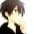
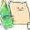
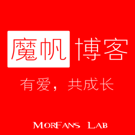

chenjunyu19这是什么什么鬼？
chenjunyu19这是什么什么鬼？SuperPaxxsLiteChat_Frame（轻聊天气泡框架），一个贼简洁 (简单)、美观、易用的 HTML 聊天界面框架
SuperPaxxs 它简洁而不简单，能使你开发聊天界面更快速
NEWSuperPaxxsLiteChat_Frame 拥有暗色模式, 快来试试吧:
chenjunyu19 直接说，气泡是谁的？SuperPaxxs 好吧，气泡 css 来自 Haswikr 的 Blog 的机器人气泡 😝
 adminHaswikr当初调色煞费苦心
adminHaswikr当初调色煞费苦心 ownerSonui 这设计真棒
menber123456789789chenjunyu19 那咋用啊？SuperPaxxs诶哟少年你找对人了
如果只是使用，那非常简单。
1. 引用 css： litechat.css
<link type="text/css" href="//lab.morfans.cn/LiteWebChat_Frame/litewebchat.css" rel="stylesheet" />
或
<link type="text/css" href="//lab.morfans.cn/LiteWebChat_Frame/litewebchat.min.css" rel="stylesheet" />
2. 创建一个 DIV ，用来容纳聊天对话，目的是不让 css 干扰页面其他内容：
<div class="lite-chatbox">
...
</div>
话说你就不会看下源码吗...楼下是特性演示
如果只是使用，那非常简单。
使用指北
1. 引用 css： litechat.css
<link type="text/css" href="//lab.morfans.cn/LiteWebChat_Frame/litewebchat.css" rel="stylesheet" />
或
<link type="text/css" href="//lab.morfans.cn/LiteWebChat_Frame/litewebchat.min.css" rel="stylesheet" />
2. 创建一个 DIV ，用来容纳聊天对话，目的是不让 css 干扰页面其他内容：
<div class="lite-chatbox">
...
</div>
话说你就不会看下源码吗...楼下是特性演示
Chenjunyu19 退出了聊天室并撩了你一把
空消息测试 1空消息测试 2
chenjunyu19注意，上面两条空消息的消息内容代码不一样 SuperPaxxs 头像换成方形请去掉 radius
chenjunyu19我是左边的方形头像 图片消息 
图片消息 2
图片带文字是可以的
右边长消息 我的消息真的超级长长长长长长长长长长长长长长长长长长长长长长长长长长长长长长长长长长长长长长长长长长长长长长长长长长长长长长长长长长长长长长长长长长长长长长长长长长长长长长长长长长长长长长长长长长长长长长长长长长长长长长长长长长长长长长长长长长长长长长长长长长长长长长长长长长长长长长长长长长长长长长长长长长长长欸
左边长消息 这么巧鸭，我的也超超超超超超超超超超超超超超超超超超超超超超超超超超超超超超超超超超超超超超超超超超超超超超超超超超超超超超超超超超超超超超超超超超超超超超超超超超超超超超超超超超超超超超超超超超超超超超超超超超超超超超超超超超超超超超超超超超超超超超超超超超超超超超超超超超超超超超超超超超超超超超超超超超超超超级长的欸 系统消息：左 / 右边长消息被管理员批判一番……
系统消息：normal
系统消息：primary
系统消息：success
系统消息：info
系统消息：warning
系统消息：danger
带有超链接的消息测试 当然是可以有超链接的。例子在这里：
你敢点我吗 ← 戳这里
你敢点我吗 ← 戳这里
全符号测试 。，；？：！‘’“”@ˆ.,;?:!'"〝〞﹫ˇ 全 emoji 测试 😀😝🐂🍺 当无昵时候需要 填充
SuperPaxxs 换行用 <br>，HTML 你懂的..
chenjunyu19以上就是全部的特性，以后有空再更